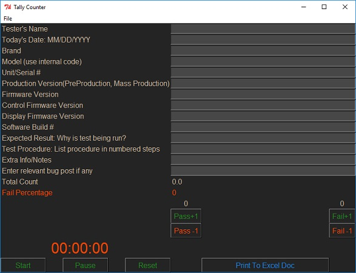

Welcome to Let's Program Now! A site devoted to software development. The goal of this site is to provide tutorials, showcase projects,and contribute to the programming community
Tally Counter for product testing:

Copyright © 2018 Let's Program Now!